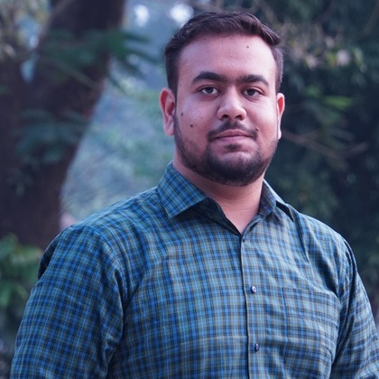
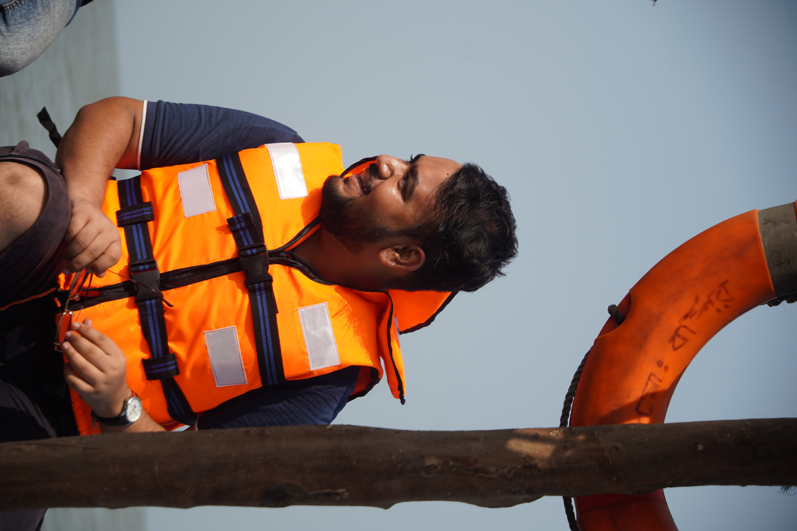
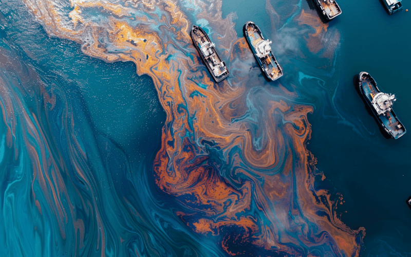
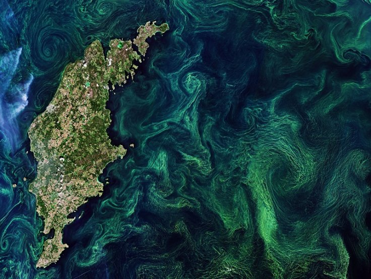
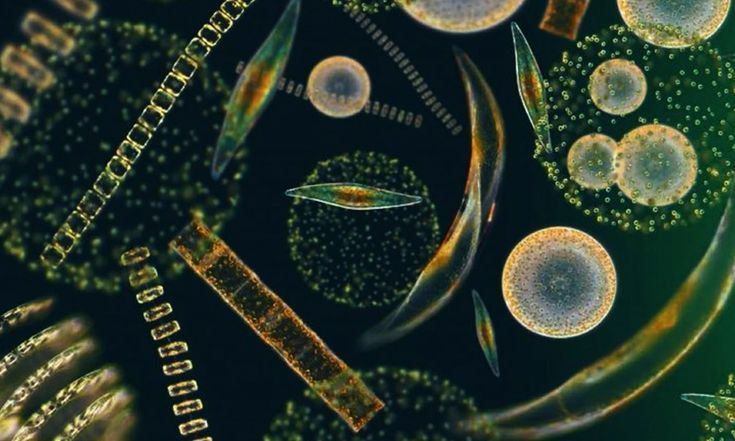
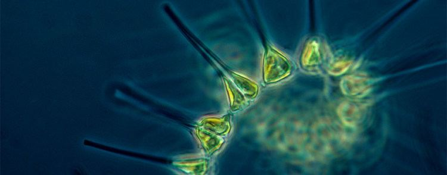
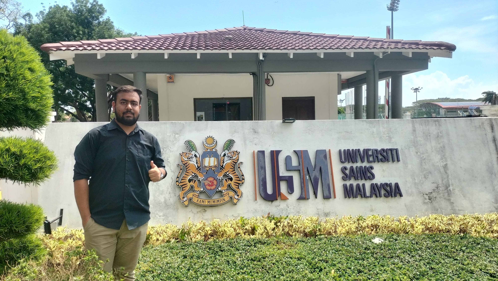

Physical Oceanographer & Researcher
Investigating phytoplankton dynamics, marine carbon cycling, and coastal ecosystem responses to environmental change. Experienced in satellite oceanography, Lagrangian particle tracking, and machine-learning frameworks for marine hazard forecasting.

Combining numerical modelling with field-based observations to understand transport and dispersion in coastal marine systems.

I am a physical oceanographer with a strong foundation in partial differential equations, vector calculus, and linear algebra. My research bridges the gap between numerical simulation and field observation, with a particular focus on Lagrangian transport processes in coastal and estuarine environments.
As an NF-POGO Centre of Excellence Scholar at Dalhousie University's Ocean Frontier Institute, I am training in observational oceanography across Memorial University, the Hakai Institute, and Dalhousie. My work spans from oil-spill trajectory modelling using OpenDrift to machine-learning-based harmful algal bloom forecasting using satellite remote sensing.
I am seeking a PhD position to develop mechanistic biogeochemical models of nutrient cycling and primary production, with emphasis on integrating field observations (drifters, CTD, moorings) with high-resolution numerical simulations.
Selected projects spanning Lagrangian modelling, satellite oceanography, machine learning, and coastal biogeochemistry.

2024–25Simulated hypothetical oil spills near Chattogram and Mongla ports using OpenDrift/OpenOil forced with CMEMS reanalysis. Identified trajectory accuracy limits due to reanalysis resolution, motivating drifter-based field validation.

2024–25Satellite-based MODIS-Aqua pipeline (2010–2024) for harmful algal bloom risk forecasting. Applied Random Forest and XGBoost to predict HAB risk 5–7 days in advance with seasonal risk mapping.

2023–24Analyzed MODIS-Aqua chlorophyll-a and POC concentrations using SNAP and R. Examined seasonal productivity patterns and blue-green band-ratio algorithms across the Bay of Bengal.

2025–26M.Sc. thesis quantifying phytoplankton functional diversity (FRic, FEve, FDiv, FDis, Rao's Q) from field observations. Built Random Forest and XGBoost frameworks to identify ecological drivers of community assembly.

InternshipAn inside look at a research internship — project work, fieldwork, mentorship, and personal takeaways from the experience.
Mathematical methods, programming, ocean modelling, remote sensing, and machine learning.
Partial Differential Equations, Vector Calculus, Linear Algebra, Fourier Analysis, Time-Series Analysis
Python, R, NumPy, Pandas, Matplotlib, Scikit-learn, Google Colab
GAMs, Random Forest, XGBoost, SHAP interpretation, time-series analysis
OpenDrift/OpenOil, Delft3D FM, Lagrangian particle tracking, NetCDF, CMEMS products
MODIS, Landsat, Sentinel, SNAP, ArcGIS, Google Earth Engine; ocean-color products (Chl-a, POC, SST)
Carbon and nutrient cycling, phytoplankton trait-based ecology, functional diversity indices
Official scores for standardized tests taken as part of graduate school and international mobility requirements.
Score would be updated later.
ICCCAD SDG Policy Challenge; Millennium Fellowship 2024; Intl. Symposium on Marine Resource Management; Workshop on Small-Scale Fishers; Virtual Hackathon on Plastic-Free Rivers
Google (Crash Course on Python, Supervised ML); ICT Division (Intro to Python); 10 Minute School (Python for AI/ML); Reef Resilience (Adaptation Design, Remote Sensing); Bohubrihi (Python, Data Analytics); IUCN Red List (Modules 1–3)